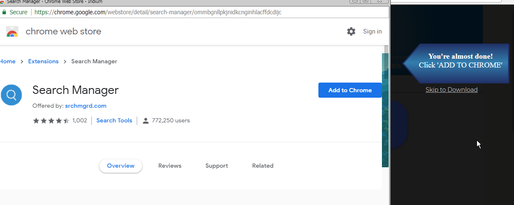
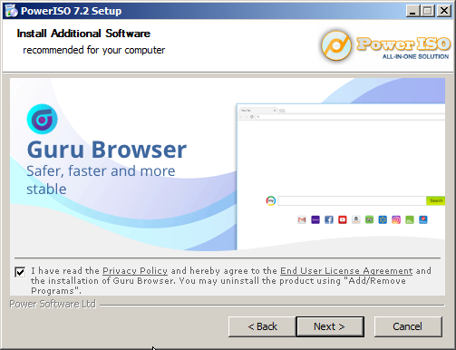
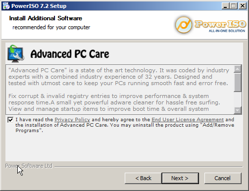

This article was created on 10/7/2018
If you want to edit this article, or contribute your own article(s), visit us at the git repo on Codeberg. All contributions must be licensed under the CC0 license to be accepted.

PowerISO is a CD / DVD / BD image file processing tool.
The PowerISO software itself, after you have installed it, does not seem to have a lot of serious privacy problems and would probably be listed as "Not Spyware" or "Low". However, downloading and installing this software requires careful attention because it attempts to install several spyware programs and otherwise violates your privacy at every step of the installation process. So it's received this higher rating because of how bad this process is for user privacy. Also, keep in mind that this is for the free version of the software and the paid version might be slightly better for user privacy, however because there are so many problems with the free version you would have to do your own tests to make sure.
To talk more specifically about the software itself, it will check off "automatically check for updates" by default in the installer which is bad, but you can uncheck it. When I actually ran it after installing, it did not make any unsolicited requests so it didn't have any problems. When I asked it to check for updates, it used HTTP to talk to some server. HTTP is a little excessive and not good for privacy. But at least it doesn't phone home or anything, which is really not something I expected after seeing the absolute disregard for user privacy when trying to install the program.
Microsoft Network Monitor 3.4, ProcMon, and NoScript were used to check this program and it's installation process for spyware.
When you try to download this program off of the developer's website (http://www.poweriso.com/download.php), the download link,
which appears to be a link to: http://www.fettcedob-nero.com/vf6o1o5/PowerISO7-x64.exe, is actually a redirect to a website that tries to run a third
party script (spyware) on your browser.
I could not manage to download this program with a Firefox-based browser, so I used a Chrome-Based browser to download it. Once I had enabled JavaScript and executed all of the spyware involved, it attempted to get me to install this Chrome extension:
While this is not a review of search manager, it's worth noting that this extension is known adware at least, and who knows what else it does. Any searches about this extension should explain this. But at the very least, assuming that you didn't install any spyware yet, you at least have the PowerISO installer...
Once you run the PowerISO installer, it will attempt to install the following programs on your computer:
 
Which both look very shady. CDex also seems to be using this same tactic and installer software.
Now, to top it all off, the PowerISO installer will also phone home to some Amazon Servers:
This article was created on 10/7/2018
If you want to edit this article, or contribute your own article(s), visit us at the git repo on Codeberg. All contributions must be licensed under the CC0 license to be accepted.